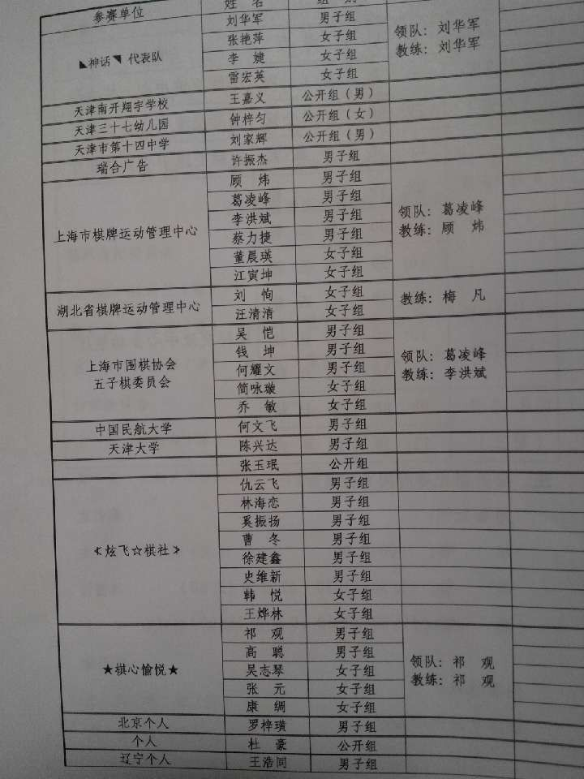

2013年全国五子棋公开赛男女子组有奖竞猜
#1 <font color="Fuchsia">2013年全国五子棋公开赛男女子组有奖竞猜</font>作者：无尽 发表时间：2013-6-9 20:13:09
请于2013年6月10日早上10:00（此为截止时间）前跟帖回复你所预测的2013年全国五子棋公开赛男子、女子组前三名（公开组除外），每猜中一位+1威望，男子组全对额外加2威望，女子组全队额外加1威望。参赛选手名单见附件。
本次竞猜解释权归论坛管理组。
附件

［此帖子已被 无尽 在 2013-6-9 20:13:25 编辑过］
［此帖子已被 无尽 在 2013-6-9 20:14:22 编辑过］
#2 Re:2013年全国五子棋公开赛男女子组有奖竞猜作者：冰雪笑醉 发表时间：2013-6-9 20:17:42
我在质疑谁弄的表格，我炫飞提交了两次名单，领队和教练哪去了呢［此帖子已被 冰雪笑醉 在 2013-6-9 20:25:29 编辑过］
#3 Re:2013年全国五子棋公开赛男女子组有奖竞猜作者：超级天逸超人 发表时间：2013-6-9 20:43:17
 男子组：
男子组：［ 小丸.net 于 2013-6-12 15:04:36 时奖励此帖[金币加 100 威望加1］
#4 Re:2013年全国五子棋公开赛男女子组有奖竞猜作者：海月 发表时间：2013-6-9 20:55:00
男子组：
冠军：芦海
亚军：曹冬
季军：祁观
女子组：
冠军：李菲
亚军：汪清清
季军：于亚君
［ 小丸.net 于 2013-6-12 15:05:01 时奖励此帖[金币加 100 威望加1］
#5 Re:2013年全国五子棋公开赛男女子组有奖竞猜作者：冰雪笑醉 发表时间：2013-6-9 20:59:05
男子组：
冠军：曹冬
亚军：祁观
季军：奚振扬
女子组：
冠军：汪清清
亚军：王烨林
季军：李非
［ 小丸.net 于 2013-6-12 15:05:29 时奖励此帖[金币加 100 威望加1］
#6 Re:2013年全国五子棋公开赛男女子组有奖竞猜作者：奇林 发表时间：2013-6-9 21:22:33
女子组 汪清清 韩悦 简咏璇
［ 小丸.net 于 2013-6-12 15:07:26 时奖励此帖[金币加 100 威望加1］
#7 Re:2013年全国五子棋公开赛男女子组有奖竞猜作者：梧桐风 发表时间：2013-6-9 21:25:58
女子组 汪清清 韩悦 简咏璇
［ 小丸.net 于 2013-6-12 15:08:23 时奖励此帖[金币加 100 威望加1］
［ 梧桐风 于 2013-6-14 8:18:35 时奖励此帖[金币加 100 威望加1］
#8 Re:2013年全国五子棋公开赛男女子组有奖竞猜作者：问题不大 发表时间：2013-6-9 21:29:13
女子组 汪清清 韩悦 简咏璇
［ 小丸.net 于 2013-6-12 15:09:09 时奖励此帖[金币加 100 威望加1］
#9 Re:2013年全国五子棋公开赛男女子组有奖竞猜作者：釣鱼岛岛主 发表时间：2013-6-9 21:29:46
男子组：
冠军：芦海
亚军：曹冬
季军：祁观
女子组：
冠军：李菲
亚军：汪清清
季军：王烨林
［此帖子已被 釣鱼岛岛主 在 2013-6-9 23:18:16 编辑过］
［ 小丸.net 于 2013-6-12 15:09:32 时奖励此帖[金币加 100 威望加1］
［ 小丸.net 于 2013-6-12 15:09:34 时奖励此帖[金币加 100 威望加1］
#10 Re:2013年全国五子棋公开赛男女子组有奖竞猜作者：小丸.net 发表时间：2013-6-9 21:31:42
按顺序冠亚季
［ 小丸.net 于 2013-6-12 15:10:15 时奖励此帖[金币加 100 威望加1］
#11 Re:2013年全国五子棋公开赛男女子组有奖竞猜作者：佐小伊 发表时间：2013-6-9 21:35:18
［ 小丸.net 于 2013-6-12 15:10:38 时奖励此帖[金币加 100 威望加1］
［ 小丸.net 于 2013-6-12 15:10:39 时奖励此帖[金币加 100 威望加1］
［ 小丸.net 于 2013-6-12 15:10:40 时奖励此帖[金币加 100 威望加1］
#12 Re:2013年全国五子棋公开赛男女子组有奖竞猜作者：黄药师 发表时间：2013-6-9 21:40:27
男子组：冠军 谢维祥
亚军 芦海
季军 曹冬
女子组：
冠军 李菲
亚军 汪清清
季军 简永璇
#13 Re:2013年全国五子棋公开赛男女子组有奖竞猜作者：月下回廊 发表时间：2013-6-9 21:50:37
男子组：奚振扬 曹东 祁观 女子：汪清清 韩悦 简咏璇［ 小丸.net 于 2013-6-12 15:11:17 时奖励此帖[金币加 100 威望加1］
［ 小丸.net 于 2013-6-12 15:11:19 时奖励此帖[金币加 100 威望加1］
#14 Re:2013年全国五子棋公开赛男女子组有奖竞猜作者：一侠客一 发表时间：2013-6-9 22:03:45
曹冬仇云飞祁观汪清清王烨林李非［ 小丸.net 于 2013-6-12 15:11:53 时奖励此帖[金币加 100 威望加1］
#15 Re:2013年全国五子棋公开赛男女子组有奖竞猜作者：涩涩棋 发表时间：2013-6-9 22:10:10
女子组 韩悦 汪清清 李菲
#16 Re:2013年全国五子棋公开赛男女子组有奖竞猜作者：南京小飞机 发表时间：2013-6-9 22:10:59
男子组：
冠军：奚振扬
亚军：祁观
季军：曹东
女子组：
冠军：汪清清
亚军：吴志琴
季军：李非
［ 小丸.net 于 2013-6-12 15:12:11 时奖励此帖[金币加 100 威望加1］
#17 Re:2013年全国五子棋公开赛男女子组有奖竞猜作者：圊籽 发表时间：2013-6-9 22:11:52
［ 小丸.net 于 2013-6-12 15:12:27 时奖励此帖[金币加 100 威望加1］
［ 小丸.net 于 2013-6-12 15:12:29 时奖励此帖[金币加 100 威望加1］
#18 Re:2013年全国五子棋公开赛男女子组有奖竞猜作者：雄鹰王 发表时间：2013-6-9 22:18:36
［ 小丸.net 于 2013-6-12 15:12:45 时奖励此帖[金币加 100 威望加1］
#19 Re:2013年全国五子棋公开赛男女子组有奖竞猜作者：天真無邪 发表时间：2013-6-9 22:25:08
［ 小丸.net 于 2013-6-12 15:13:01 时奖励此帖[金币加 100 威望加1］
［ 小丸.net 于 2013-6-12 15:13:02 时奖励此帖[金币加 100 威望加1］
［ 小丸.net 于 2013-6-12 15:13:04 时奖励此帖[金币加 100 威望加1］
#20 Re:2013年全国五子棋公开赛男女子组有奖竞猜作者：一侠客一 发表时间：2013-6-9 22:31:16
曹冬仇云飞祁观汪清清王烨林李非［ 小丸.net 于 2013-6-12 15:14:44 时奖励此帖[金币加 100 威望加1］
#21 Re:2013年全国五子棋公开赛男女子组有奖竞猜作者：鬼灵 发表时间：2013-6-9 22:31:29
［ 小丸.net 于 2013-6-12 15:16:02 时奖励此帖[金币加 100 威望加1］
#22 Re:2013年全国五子棋公开赛男女子组有奖竞猜作者：炫魂皇焱 发表时间：2013-6-9 22:35:35
男子：曹冬 顾伟 李洪斌［ 小丸.net 于 2013-6-12 15:16:21 时奖励此帖[金币加 100 威望加1］
［ 小丸.net 于 2013-6-12 15:16:22 时奖励此帖[金币加 100 威望加1］
［ 小丸.net 于 2013-6-12 15:16:24 时奖励此帖[金币加 100 威望加1］
［ 小丸.net 于 2013-6-12 15:20:47 时奖励此帖[金币加 100 威望加1］
#23 Re:2013年全国五子棋公开赛男女子组有奖竞猜作者：逆刃 发表时间：2013-6-9 22:37:47
男子组：
女子组：
［ 小丸.net 于 2013-6-12 15:17:02 时奖励此帖[金币加 100 威望加1］
［ 小丸.net 于 2013-6-12 15:17:04 时奖励此帖[金币加 100 威望加1］
#24 Re:2013年全国五子棋公开赛男女子组有奖竞猜作者：伤情路 发表时间：2013-6-9 22:39:41
男子组：冠军 祁观
亚军 曹冬
季军 仇云飞
女子组：
冠军 汪清清
亚军 李菲
季军 简咏璇
［ 小丸.net 于 2013-6-12 15:18:22 时奖励此帖[金币加 100 威望加1］
［ 小丸.net 于 2013-6-12 15:18:25 时奖励此帖[金币加 100 威望加1］
#25 Re:2013年全国五子棋公开赛男女子组有奖竞猜作者：第五象限 发表时间：2013-6-9 22:56:17
男子组冠军：祁观、亚军：曹冬、季军、芦海；［ 小丸.net 于 2013-6-12 15:18:46 时奖励此帖[金币加 100 威望加1］
［ 小丸.net 于 2013-6-12 15:18:47 时奖励此帖[金币加 100 威望加1］
#26 Re:2013年全国五子棋公开赛男女子组有奖竞猜作者：无尽 发表时间：2013-6-9 22:56:31
曹冬祁观蔡力捷［ 小丸.net 于 2013-6-12 15:19:14 时奖励此帖[金币加 100 威望加1］
#27 Re:2013年全国五子棋公开赛男女子组有奖竞猜作者：淡月疏星 发表时间：2013-6-9 23:08:54
［ 小丸.net 于 2013-6-12 15:19:36 时奖励此帖[金币加 100 威望加1］
［ 小丸.net 于 2013-6-12 15:19:37 时奖励此帖[金币加 100 威望加1］
#28 Re:2013年全国五子棋公开赛男女子组有奖竞猜作者：中中 发表时间：2013-6-9 23:16:09
以上仅为个人观点
［ 小丸.net 于 2013-6-12 15:20:26 时奖励此帖[金币加 100 威望加1］
#29 Re:2013年全国五子棋公开赛男女子组有奖竞猜作者：wuxiao 发表时间：2013-6-9 23:37:32
男子组：
冠军：曹冬
亚军：祁观
季军：奚振扬
女子组：
冠军：汪清清
亚军：王烨林
季军：李非
［ 无尽 于 2013-6-13 12:26:49 时奖励此帖[金币加 100 威望加1］
#30 Re:天真無邪【==Re:2013年全国五子棋公开赛男女子组有奖竞猜==】作者：吉小鼠 发表时间：2013-6-9 23:42:04
引用：
原文由 天真無邪 发表于 2013-6-9 22:25:08 :
就这个 懒得自己写了 
［ 小丸.net 于 2013-6-13 15:23:15 时奖励此帖[金币加 100 威望加1］
［ 小丸.net 于 2013-6-13 15:23:16 时奖励此帖[金币加 100 威望加1］
［ 小丸.net 于 2013-6-13 15:23:17 时奖励此帖[金币加 100 威望加1］
#31 Re:2013年全国五子棋公开赛男女子组有奖竞猜作者：踵酃 发表时间：2013-6-9 23:42:32
男子组：
冠军：曹冬
亚军：芦海
季军：祁观
女子组：
冠军：汪清清
亚军：于亚君
季军：李菲
ps:每次竞猜只要跟大众竟然都能猜中一两个， 五子棋本来应该是冷门占的比较多的种类，然而冷门几乎没发生。
［ 小丸.net 于 2013-6-12 15:21:31 时奖励此帖[金币加 100 威望加1］
#32 Re:2013年全国五子棋公开赛男女子组有奖竞猜作者：自来水 发表时间：2013-6-9 23:53:44
男子组：
冠军：曹冬
亚军：祁观
季军：芦海
女子组：
冠军：汪清清
亚军：刘恂
季军：李菲
［ 小丸.net 于 2013-6-12 15:21:43 时奖励此帖[金币加 100 威望加1］
#33 Re:2013年全国五子棋公开赛男女子组有奖竞猜作者：清风明月月 发表时间：2013-6-10 0:07:15
男子组：曹冬祁观芦海 女子组：汪清清 李菲 简咏璇［ 小丸.net 于 2013-6-12 15:21:58 时奖励此帖[金币加 100 威望加1］
#34 Re:2013年全国五子棋公开赛男女子组有奖竞猜作者：絕版賭徒 发表时间：2013-6-10 0:08:53
男子组：
冠军 黄圣明
季军 简永璇
#35 Re:2013年全国五子棋公开赛男女子组有奖竞猜作者：一次一个号 发表时间：2013-6-10 0:14:14
男子组：1曹冬 2祁观 3芦海 女子组：1汪清清 2简咏璇 3王烨林［ 小丸.net 于 2013-6-12 15:22:28 时奖励此帖[金币加 100 威望加1］
［ 小丸.net 于 2013-6-12 15:22:29 时奖励此帖[金币加 100 威望加1］
［ 小丸.net 于 2013-6-12 15:22:31 时奖励此帖[金币加 100 威望加1］
［ 小丸.net 于 2013-6-12 15:22:32 时奖励此帖[金币加 100 威望加1］
#36 Re:2013年全国五子棋公开赛男女子组有奖竞猜作者：换你一笑 发表时间：2013-6-10 0:33:57
女子组：汪清清 李菲 韩悦
［ 小丸.net 于 2013-6-12 15:24:01 时奖励此帖[金币加 100 威望加1］
#37 Re:2013年全国五子棋公开赛男女子组有奖竞猜作者：我爱棋 发表时间：2013-6-10 0:43:40
男子组：曹东 谢维祥兰志仁［ 小丸.net 于 2013-6-12 15:24:17 时奖励此帖[金币加 100 威望加1］
［ 小丸.net 于 2013-6-12 15:24:18 时奖励此帖[金币加 100 威望加1］
#38 Re:2013年全国五子棋公开赛男女子组有奖竞猜作者：潇洒 发表时间：2013-6-10 0:47:53
女子组 汪清清 韩悦 简咏璇
［ 小丸.net 于 2013-6-12 15:24:50 时奖励此帖[金币加 100 威望加1］
［ 潇洒 于 2013-6-17 8:31:18 时奖励此帖[金币加 100 威望加1］
［ 潇洒 于 2013-6-17 8:32:03 时奖励此帖[金币加 100 威望加1］
#39 Re:2013年全国五子棋公开赛男女子组有奖竞猜作者：木石 发表时间：2013-6-10 2:31:36
男子组：祁观、兰志仁、谢维洋。 女子组：汪清清、王烨林、康绸。［ 小丸.net 于 2013-6-12 15:25:04 时奖励此帖[金币加 100 威望加1］
#40 Re:无尽【==2013年全国五子棋公开赛男女子组有奖竞猜==】作者：天籁之琴 发表时间：2013-6-10 6:30:19
男子组:冠军祁观，亚军曹冬，季军奚振杨［ 小丸.net 于 2013-6-12 15:25:24 时奖励此帖[金币加 100 威望加1］
［ 小丸.net 于 2013-6-12 15:25:26 时奖励此帖[金币加 100 威望加1］
［ 小丸.net 于 2013-6-12 15:25:27 时奖励此帖[金币加 100 威望加1］
［ 小丸.net 于 2013-6-12 15:25:28 时奖励此帖[金币加 100 威望加1］
［ 小丸.net 于 2013-6-12 15:25:30 时奖励此帖[金币加 100 威望加1］
#41 Re:2013年全国五子棋公开赛男女子组有奖竞猜作者：猪小弟 发表时间：2013-6-10 6:54:46
男子组：
冠军：曹冬
亚军：祁观
季军：顾炜
女子组：
冠军：汪清清
亚军：王烨林
季军：简咏璇
［ 小丸.net 于 2013-6-12 15:27:18 时奖励此帖[金币加 100 威望加1］
#42 Re:2013年全国五子棋公开赛男女子组有奖竞猜作者：战神巴蒂 发表时间：2013-6-10 6:59:14
男子组：
冠军：曹冬
亚军：芦海
季军：兰志仁
女子组：
冠军：汪清清
亚军：刘恂
季军：简咏璇
［ 小丸.net 于 2013-6-12 15:27:30 时奖励此帖[金币加 100 威望加1］
#43 Re:2013年全国五子棋公开赛男女子组有奖竞猜作者：dyccj 发表时间：2013-6-10 8:08:42
［ 小丸.net 于 2013-6-12 15:27:42 时奖励此帖[金币加 100 威望加1］
#44 Re:2013年全国五子棋公开赛男女子组有奖竞猜作者：没定式随便下 发表时间：2013-6-10 8:16:24
男子组：
冠军：祁观
亚军：曹冬
季军：兰志仁
女子组：
冠军：汪清清
亚军：王烨林
季军：吴志琴
［ 小丸.net 于 2013-6-12 15:27:56 时奖励此帖[金币加 100 威望加1］
［ 小丸.net 于 2013-6-12 15:27:58 时奖励此帖[金币加 100 威望加1］
#45 Re:2013年全国五子棋公开赛男女子组有奖竞猜作者：虎哥 发表时间：2013-6-10 8:53:33
［ 小丸.net 于 2013-6-12 15:28:11 时奖励此帖[金币加 100 威望加1］
#46 Re:2013年全国五子棋公开赛男女子组有奖竞猜作者：忧郁的双眼 发表时间：2013-6-10 9:14:01
#47 Re:2013年全国五子棋公开赛男女子组有奖竞猜作者：与郎共五 发表时间：2013-6-10 9:22:15
汪清清 简咏璇 王桦林
［ 小丸.net 于 2013-6-12 15:28:28 时奖励此帖[金币加 100 威望加1］
［ 小丸.net 于 2013-6-12 15:28:30 时奖励此帖[金币加 100 威望加1］
［ 小丸.net 于 2013-6-12 15:28:31 时奖励此帖[金币加 100 威望加1］
［ 小丸.net 于 2013-6-12 15:28:35 时奖励此帖[金币加 100 威望加1］
#48 Re:2013年全国五子棋公开赛男女子组有奖竞猜作者：weigui 发表时间：2013-6-10 9:26:46
楼上的，我打赌棋情可以获得倒数第一。牛牛拿第一基本没戏。不知道现在的对阵棋情不在，他的对手分怎么计算。如果为0。那前三都有危险［此帖子已被 weigui 在 2013-6-10 9:44:00 编辑过］
#49 Re:2013年全国五子棋公开赛男女子组有奖竞猜作者：丹尼 发表时间：2013-6-10 9:38:37
［ 小丸.net 于 2013-6-12 15:29:03 时奖励此帖[金币加 100 威望加1］
#50 Re:2013年全国五子棋公开赛男女子组有奖竞猜作者：弱惜 发表时间：2013-6-10 9:40:35
［ 小丸.net 于 2013-6-12 15:29:24 时奖励此帖[金币加 100 威望加1］
［ 小丸.net 于 2013-6-12 15:29:25 时奖励此帖[金币加 100 威望加1］
#51 Re:2013年全国五子棋公开赛男女子组有奖竞猜作者：棋空 发表时间：2013-6-10 9:53:04
冠军：芦海
亚军：曹冬
季军：祁观
女子组：
冠军：汪清清
亚军：李菲
季军：于亚君
［ 小丸.net 于 2013-6-12 15:26:15 时奖励此帖[金币加 100 威望加1］
［ 小丸.net 于 2013-6-12 15:26:17 时奖励此帖[金币加 100 威望加1］
#52 Re:吉小鼠【==Re:天真無邪【==Re:2013年全国五子棋公开赛男女子组有奖竞猜==】==】作者：中中 发表时间：2013-6-10 10:30:47
引用：
原文由 吉小鼠 发表于 2013-6-9 23:42:04 :引用：
原文由 天真無邪 发表于 2013-6-9 22:25:08 :队长好省事儿啊，光明正大地窃取门仔劳动成果，哈哈
就这个 懒得自己写了
［ 小丸.net 于 2013-6-12 15:26:38 时奖励此帖[金币加 100 威望加1］
［ 小丸.net 于 2013-6-12 15:26:48 时奖励此帖[金币加 100 威望加1］
［ 小丸.net 于 2013-6-12 15:26:49 时奖励此帖[金币加 100 威望加1］
#53 Re:中中【==Re:吉小鼠【==Re:天真無邪【==Re:2013年全国五子棋公开赛男女子组有奖竞猜==】==】==】作者：吉小鼠 发表时间：2013-6-10 12:34:00
哈哈哈哈哈哈，队长不能白当的~~~#54 Re:2013年全国五子棋公开赛男女子组有奖竞猜作者：掌棋如烟 发表时间：2013-6-10 12:49:59
汗啊，我早上用手机引用了一下发的帖子上哪去了。。。。#55 Re:2013年全国五子棋公开赛男女子组有奖竞猜作者：微微一笑 发表时间：2013-6-11 14:27:07
跟着蒙个威望吧~现在真没机会赚威望啦！